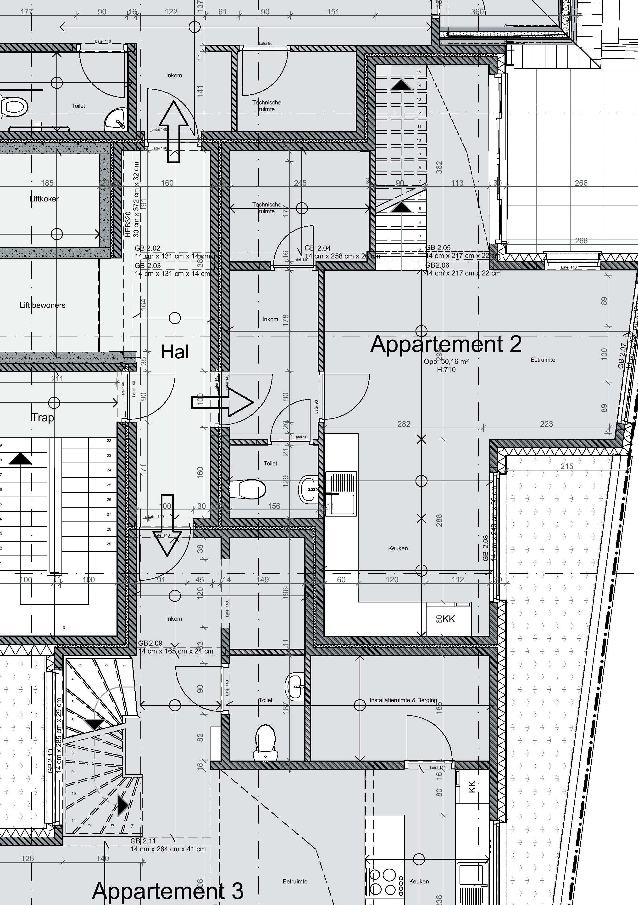
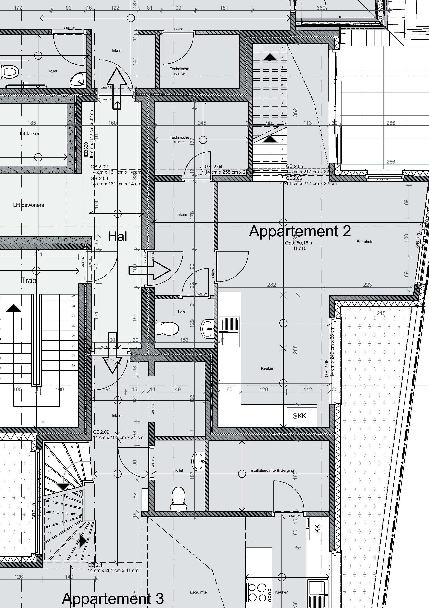
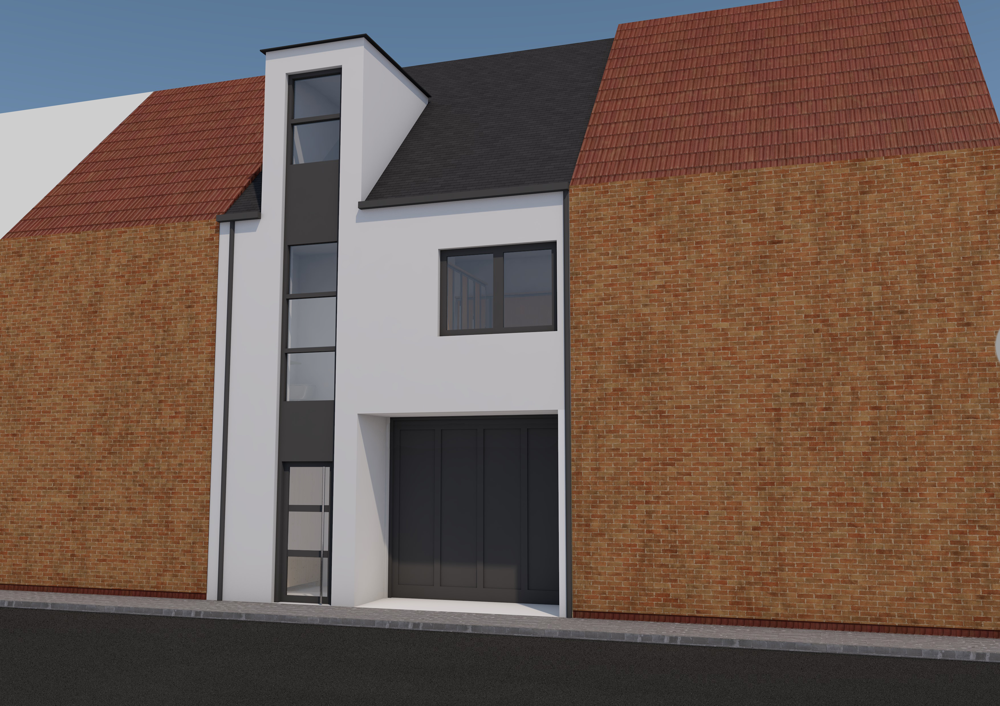
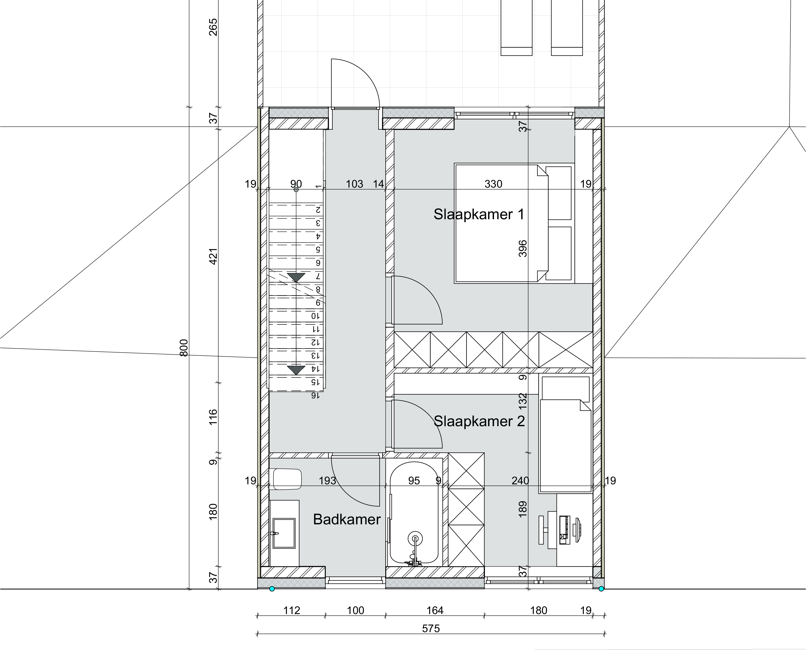
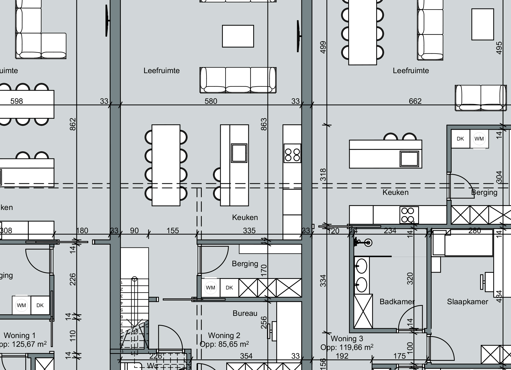
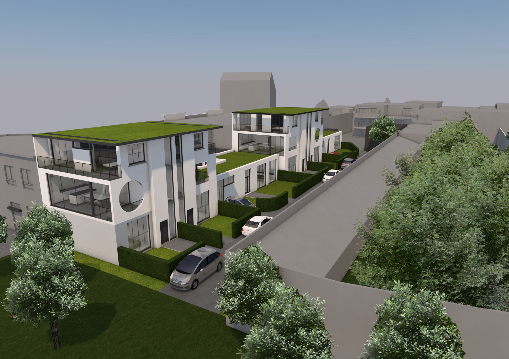
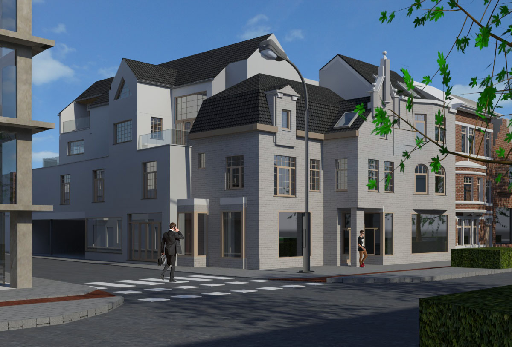
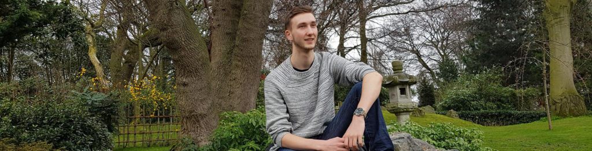

BRENT VAN ACKER
-
 
Digitalisation
-

Creation
-

Visualisation
-
What I do
In mijn bachelor diploma heb ik een aardige hoeveelheid kennis gekregen over verschillende programma's zoals Photoshop, Archicad, Autocad, Sketchup en vele meer. Deze kennis gebruik ik nu om jullie als student te kunnen helpen met het realiseren van uw ideeën. Aarzel zeker niet om mij hiervoor te contacteren!
Digitalisation
Grotendeels van de bevolking moeten hun bouwplannen nog zoeken vooraleer ze willen verbouwen. Deze zijn meestal in slechte staat of zijn gewoonweg spoorloos. Voor een goedkoop studentenprijsje digitaliseer ik deze plannen en hebt u deze voortaan op uw computer staan in goede en moderne kwaliteit.
Creation
Tegenwoordig gaan veel particulieren bouwen bij een bouwbedrijf die alles voor zich neemt, dit is tenslotte goedkoper (ookwel sleutel op de deur bouwen genoemd). Wat is nu het nadeel van dit soort bouwen? Jazeker, u hebt geen architect die u een modern en uniek gebouw kan ontwerpen. Ik kan voor u hetzelfde doen wat een architect zou doen; een voorontwerp maken waarmee u daarna bij uw bouwbedrijf kan aankloppen om het te laten realiseren. En dit doe ik allemaal voor maar een vierde van de prijs van een architect!
Visualisation
Wenst u uw woning graag te zien op jouw computer? in het 3D? Of bent u een architect die zoekt u naar een goedkope oplossing om visualisaties te maken van uw ontwerpen? dan bent u ook bij digiplot aan het juiste adres!
-

About Me
Brent van Acker
Sinds kort ben ik afgestudeert als Toegepaste Architect en met dit diploma kan ik als bouwkundig tekenaar, assistent-architect en/of visualisator te werk gaan. Uiteindelijk na wat twijfelen kon ik niet genoeg krijgen van architectuur en ben hierdoor begonnen aan KU Leuven voor mijn Master Architect te behalen. Doordat ik niet alle studiepunten opneem heb ik hierdoor een (beperkte) hoeveelheid vrije tijd gekregen, en wat kan ik beter doen met deze vrije tijd dan een klein centje bij te verdienen?
-
Portfolio
Mijn porfolio hieronder heeft u een duidelijk overzicht over wat ik heb geleerd in mjin jaren Toegepaste Architectuur. Ook kan u hier een aantal van mijn projecten en visualisaties terugvinden en kan als voorbeeld dienen vooraleer u mij contacteerd.
-
Heeft u interesse?
Stuur gerust een mail naar brent.vanacker80@gmail.com
U kan mij ook altijd contacteren via sms: 0471/085647